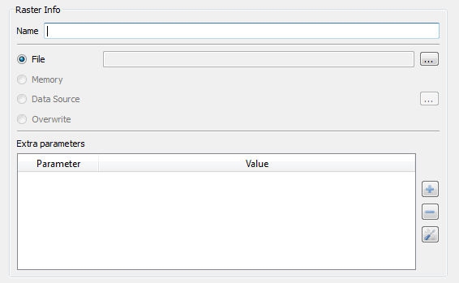

Output
Raster Information
The Output Raster
Information is an
interface used in various processes and serves to define the parameters
of a raster. This information will be used to build a raster.

The parameters that must be defined are:
- Name: The first and mandatory item
to be set is the name of the raster output.
- The second item and
also mandatory to set is which source to use. The options are:
- File: The raster will be created on
a local disk file, creating a file of type "TIFF" generated by the GDAL library.
- Memory: A temporary raster will be
created in memory.
- Data Source: An interface will be
displayed for you to select a specific Data Source.
- Overwrite: Override the input
raster used in processing (if applicable).
- The third item is
optional and allows the User to define a set of additional parameters
to create the raster.
NOTE: If you want to set specific parameters for creating the raster,
it is possible to use the "Extra
parameters" field to define pairs of values (field name and
value) for each desired property. The information contained in this
field will not be checked or validated. This is due to the fact that
the information may vary depending on the driver or data source
selected. The user must enter only information that is expected by the
selected data source.